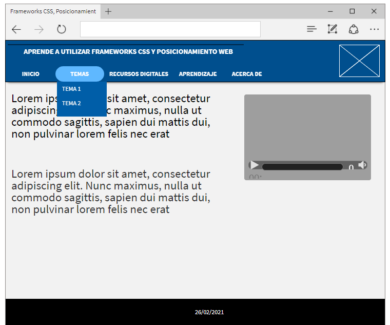

Frameworks CSS
Es una biblioteca de estilos genéricos que puede ser usada para implementar diseños web. Aportan una serie de utilidades
que pueden ser aprovechadas frecuentemente en los distintos diseños web.
el Posicionamiento Web
Es un conjunto de acciones orientadas a mejorar el posicionamiento de un sitio web en la lista de resultados de Google,
Bing, u otros buscadores de internet.1 El SEO trabaja aspectos técnicos como la optimización de la estructura y los metadatos
de una web, pero también se aplica a nivel de contenidos, con el objetivo de volverlos más útiles y relevantes para los usuarios.
Referencia
Wikipedia/2021/Framework de CSS/Tomado de: https://es.wikipedia.org/wiki/Framework_de_CSSWikipedia/2021/Posicionamiento en buscadores/Tomado de: https://es.wikipedia.org/wiki/Posicionamiento_en_buscadores
